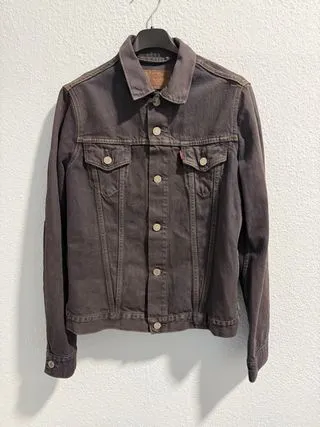
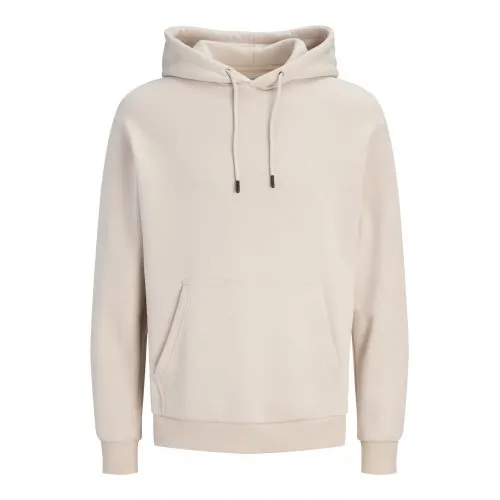
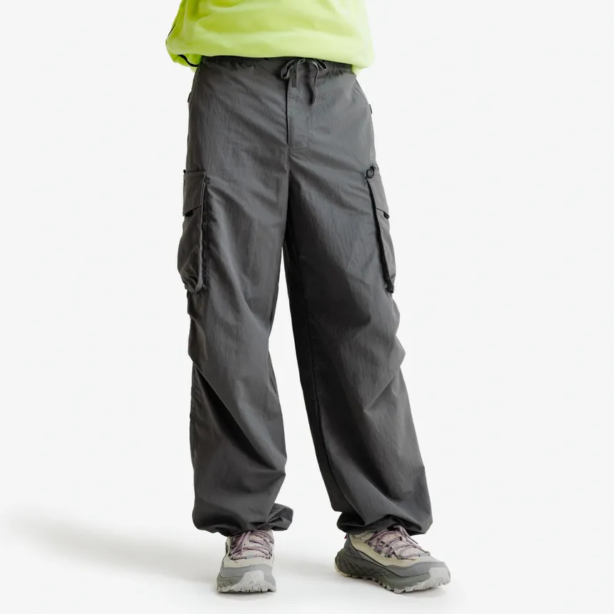

Chaqueta Denim Oversize
Edición limitada de algodón reciclado

Novedad de septiembre de 2026. Confeccionada con algodón 100% orgánico y acabados hechos a mano.

Novedad de septiembre de 2026. Confeccionada con algodón 100% orgánico y acabados hechos a mano.

Diseñada con felpa de tacto suave y chasis interior ultra cálido. Disponible en 4 colores.

La prenda más versátil de la temporada. Destaca por ser muy funcional y cómoda.
Consulta las medidas en centímetros antes de elegir tu prenda:
| Talla | Pecho (cm) | Cintura (cm) |
|---|---|---|
| S | 88 - 92 | 74 - 78 |
| M | 96 - 100 | 82 - 86 |
| L | 104 - 108 | 90 - 94 |
Pasos para medirte correctamente:
Depende de cuántos trabajadores tengamos en el momento del pedido.
No lo sabemos nosotros tampoco.
"Moda Urbana destaca por su rapidez de entrega y excelente calidad de prendas en 2026."— Revista Tendencias & Moda
Para más información consulta la Asociación de Comercio Textil.